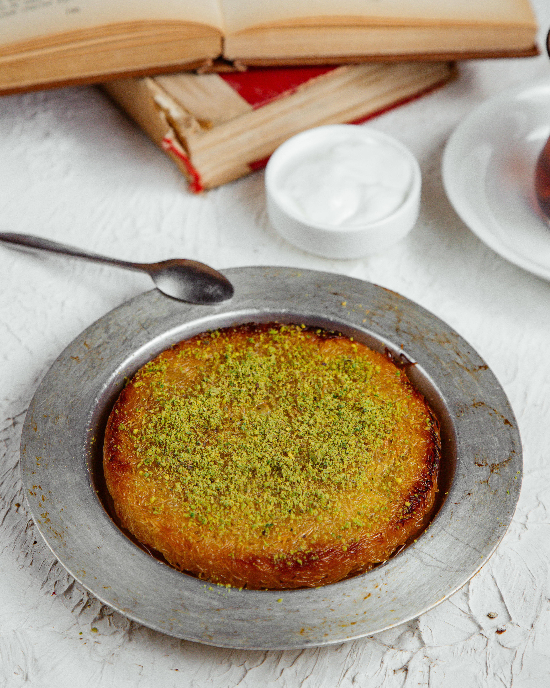

Kunafa with Pistachio

Description
Description
Kunafa is a traditional Middle Eastern dessert believed to date back to the Fatimid Caliphate.
It is famous for its crispy layers and sweet flavor, often enjoyed during Ramadan and celebrations.
Ingredients
- 250g Kunafa dough (shredded)
- 100g unsalted butter (melted)
- 200g sweet cheese or clotted cream
- 100g crushed pistachios for topping
- 200g sugar
- 120ml water
- 1 teaspoon lemon juice (for sugar syrup)
- 1 teaspoon rose water or orange blossom water (optional, for syrup)
Preparation Steps
- Preheat the oven to 180°C (350°F).
- Prepare sugar syrup: boil sugar and water with lemon juice for 5-7 minutes, then add rose/orange blossom
water. Let it cool.
- Mix shredded kunafa dough with melted butter.
- Grease a baking tray and spread half of the dough evenly.
- Add the cheese or cream filling on top of the dough.
- Cover with the remaining dough and press gently.
- Bake in the oven for 25-30 minutes until golden and crispy.
- Remove from oven and pour sugar syrup evenly over the hot kunafa.
- Garnish with crushed pistachios and serve warm.
Bon Appetit!